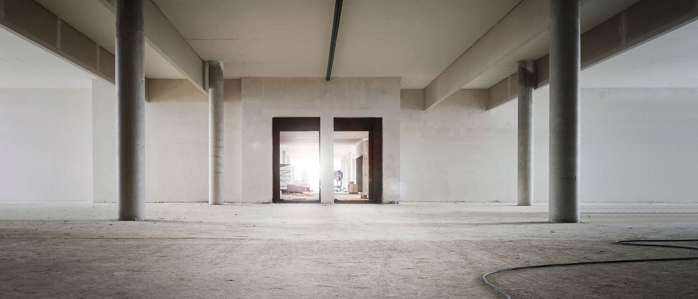
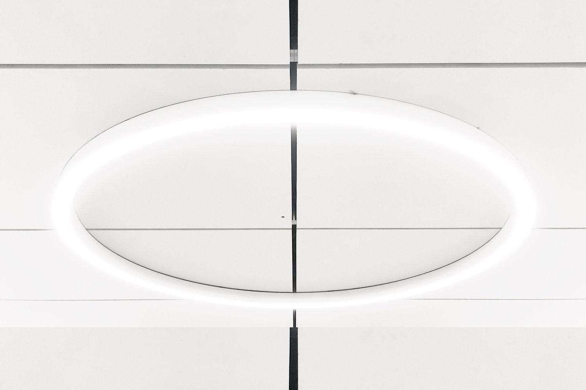
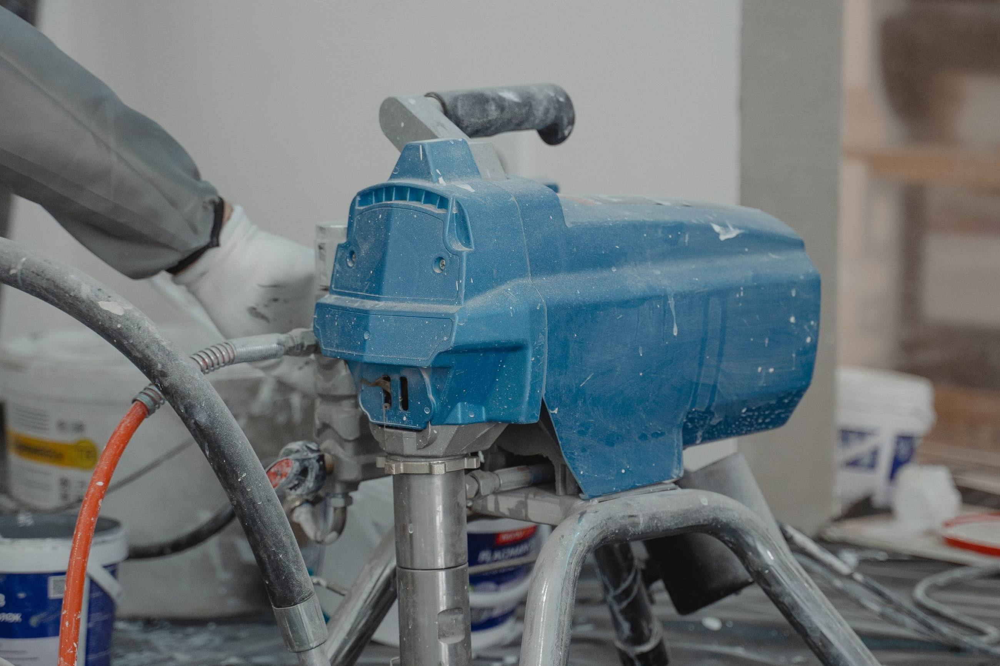

Wchodzimy po instalacjach i oddajemy pomieszczenia wykończone - własną ekipą, na własnym sprzęcie, w systemie jednego producenta.

Duże obiekty to nasza podstawowa robota, nie wyjątek od mieszkań.
Dużą budowę prowadzi się prościej niż pojedyncze mieszkanie. Na dużym obiekcie jest projekt, harmonogram i jeden decydent - wiadomo, co i w jakiej kolejności ma być zrobione, a ekipa nie stoi.
Robiliśmy szkoły i szpitale, mieszkania w budynkach deweloperskich, obiekty usługowe i salon samochodowy. Nazw inwestorów na stronie nie podajemy - dopiero po referencji na piśmie.
obiekty użyteczności publicznej · mieszkaniówka deweloperska · obiekty usługowe

Ekipa to pięć osób na stałe. Sprzęt natryskowy jest nasz, więc nie czekamy na wynajem i nie dzielimy go z inną budową. Na jednej inwestycji zrobiliśmy 25 000 m² gładzi.
5 osób w ekipie · własne agregaty natryskowe · ponad 20 lat na budowach

Rozliczamy się z obmiaru, nie z ustaleń na słowo. Na końcu mierzymy fizycznie, ile czego zostało zrobione, i na tej podstawie wystawiam fakturę - zamiast stawki rzuconej na początku za ścianki, gładź i malowanie z osobna.
obmiar po robocie · faktura na koniec · rozliczenie za wykonany zakres
Wejście planujemy pod harmonogram budowy, a nie z dnia na dzień. Termin ustalamy telefonicznie, pod konkretny zakres robót.
termin ustalany telefonicznie · wejście po instalacjach
Zadzwoń na etapie planowania robót wykończeniowych, a ustalimy termin wejścia i zakres.
Zakres robót →